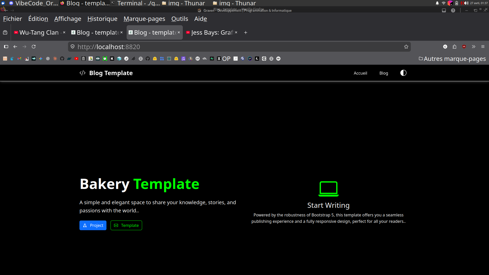
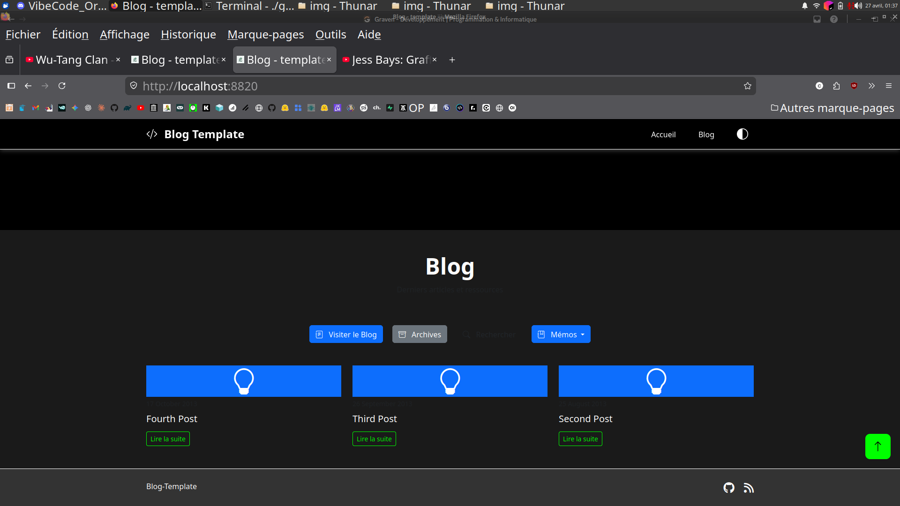
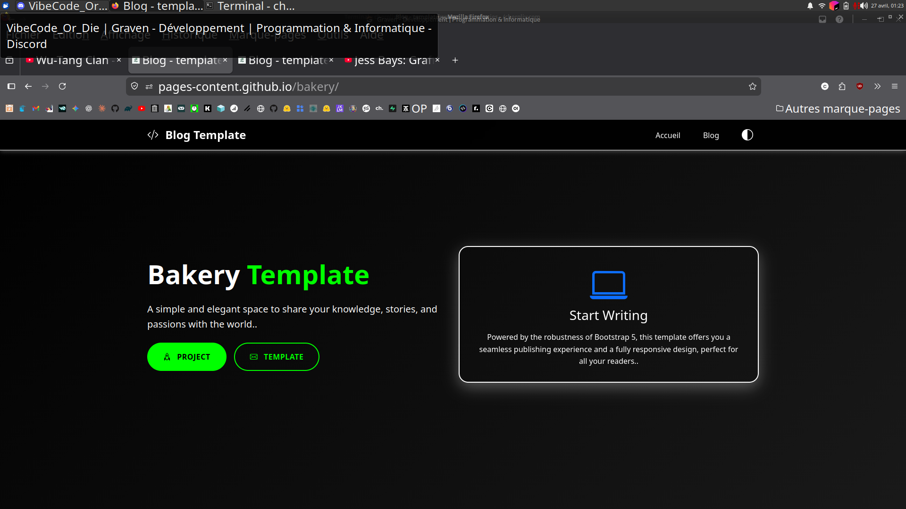
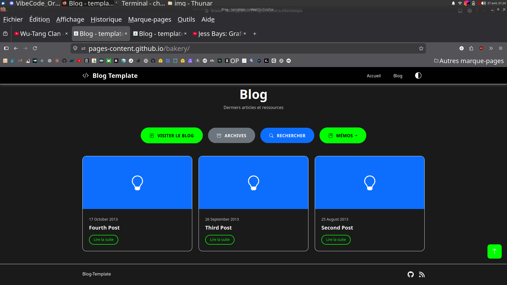

Pourquoi `serve` affichait un site moche alors que `publishSite` était parfait
Publié le 26 April 2026
Vous connaissez ce moment où votre site en local ressemble à rien, mais une fois déployé en ligne tout est nickel ? C’est ce qui m’est arrivé avec mon plugin Gradle JBake. La tâche serve affichait des boutons carrés, du texte sombre sur fond noir, et un CSS bizarrement absent. Pourtant publishSite générait le même site, lui, impeccable. Le coupable n’était ni le CSS, ni le navigateur, ni le cache. C’était une ligne de code Kotlin — et une mauvaise habitude avec les arguments en ligne de commande.
1. La scène : quatre screenshots, deux rendus
C’était après un crash système. J’avais fait quatre captures d’écran pour comparer le rendu local (./gradlew serve sur localhost:8820) avec le rendu en ligne (publishSite sur GitHub Pages). Deux screenshots par page : le haut et le bas.
1.1. Rendu local
Haut de page — Les boutons Project et Template sont petits, rectangulaires, aux couleurs standards (bleu et vert). La carte Start Writing a un fond noir uni, sans cadre.

Bas de page — Le sous-titre "Derniers articles et ressources" est quasi-illisible, trop foncé sur fond noir. Les dates sous les images blog ("17 October 2013", etc.) sont absentes.

1.2. Rendu en ligne
Haut de page — Les mêmes boutons sont grands, ovaux, vert néon flashy, texte en majuscules. La carte a un cadre blanc arrondi avec ombre portée.

Bas de page — Le sous-titre est bien lisible. Les dates sont visibles. Les cartes des articles ont des coins arrondis et les titres sont en gras.

Premier réflexe : le thème. J’utilise un système de thème dynamique (clair, sombre, high-contrast) basé sur localStorage. Peut-être que le local store déclenchait un thème high-contrast ? Non. J’avais déjà écrit un article entier sur le préchargement des thèmes, je sais comment ça marche. Et puis, même en mode high-contrast, la structure CSS (boutons ovales, ombres) devait être là. Elle ne l’était pas.
Deuxième réflexe : le cache navigateur. Non, j’avais fait le test avec des profils propres. Le diff persistait.
Troisième réflexe : serve ne servait pas les mêmes fichiers que publishSite.
2. Le diagnostic : serve ne pointait pas vers le bon dossier
Mon plugin Gradle bakery a deux tâches principales :
-
bake: génère le site statique dansbuild/bake/ -
serve: lance un serveur web local -
publishSite: poussebuild/bake/vers GitHub Pages
La divergence ne pouvait venir que de serve. Si publishSite publiait le contenu correct, c’est que build/bake/ était bon. Si serve affichait autre chose, c’est qu’il ne servait pas build/bake/.
Regardons le code. Dans SiteManager.kt, la tâche serve est définie comme ceci :
tasks.register("serve", JavaExec::class.java) { task ->
task.apply {
mainClass.set("org.jbake.launcher.Main")
classpath = jbakeRuntime
environment("GEM_PATH", jbakeRuntime.asPath)
jvmArgs(/* ... */)
args = listOf(
"-b", file(site.bake.srcPath).absolutePath,
"-s", layout.buildDirectory.get()
.asFile.resolve(site.bake.destDirPath)
.absolutePath
)
}
}org.jbake.launcher.Main est le point d’entrée de la CLI JBake 2.7.0. L’idée : passer -b pour le dossier source et -s pour le dossier destination, puis lancer le mode serveur. Sauf que…
3. La cause racine : JBake CLI ne fonctionne pas comme ça
JBake 2.7.0 attend des arguments positionnels pour source et destination, puis des flags optionnels. La signature est :
jbake <source> <destination> [options]Or dans mon code, j’écrivais :
args = listOf("-b", "/path/to/site", "-s", "/path/to/build/bake")JBake interprétait ça comme :
-
-b→ parse le flag "bake" (booléen), consommé -
/path/to/site→ devient argument positionnel 1 (source) -
-s→ parse le flag "serve" (booléen), serveur lancé immédiatement -
/path/to/build/bake→ devient un argument orphelin, ignoré ou mal interprété
Résultat : JBake prenait /path/to/site comme source, ne tenait pas compte de la destination fournie (build/bake), et utilisait son répertoire par défaut (souvent ./output ou une copie temporaire). Le fichier css/styles.css du build était donc écrasé ou ignoré, et c’est un vieux CSS par défaut (sans les variables custom, sans les arrondis, sans les ombres) qui était servi.
En comparaison, bake et publishSite utilisent le plugin Gradle JBake officiel (jbake-gradle-plugin) qui écrit proprement dans build/bake/ via l’API Gradle. Ils ne passent pas par la CLI.
4. La solution : arguments positionnels, pas des flags
La correction est triviale — une fois qu’on sait. Il suffit de passer source et destination comme arguments positionnels, puis -s en dernier :
args = listOf(
file(site.bake.srcPath).absolutePath,
layout.buildDirectory.get()
.asFile.resolve(site.bake.destDirPath)
.absolutePath,
"-s"
)C’est tout. Trois lignes changées, bug résolu.
Après publication locale du plugin (publishToMavenLocal), un ./gradlew serve lance JBake avec la syntaxe correcte :
jbake /home/user/project/site /home/user/project/build/bake -sEt cette fois-ci, le serveur Jetty intégré à JBake sert bien le contenu de build/bake/ — identique à ce qui est publié en ligne.
5. Vérification rapide avec curl
Pour s’assurer que le serveur sert bien le bon contenu, un simple curl confirme que index.html contient data-bs-theme="light" et que build/bake/css/styles.css pèse bien 31 402 octets — identique au fichier généré par bake.
$ ./gradlew serve
# Dans un autre terminal :
$ curl -s http://localhost:8820/ | grep data-bs-theme
<html ... data-bs-theme="light" ...>
$ curl -I http://localhost:8820/css/styles.css
HTTP/1.1 200 OK
Content-Length: 31402
Content-Type: text/cssLe rendu local est désormais pixel-identique au rendu déployé.
6. Pourquoi ce bug était vicieux
Vous voyez pourquoi c’était difficile à attraper ?
-
Pas d’erreur explicite : JBake ne crashait pas. Il "fonctionnait", simplement avec un mauvais dossier.
-
Le build fonctionnait :
./gradlew bakegénérait correctement les fichiers dansbuild/bake/. -
Le déploiement fonctionnait :
publishSitepoussait le bon contenu en ligne. -
Seul
serveétait cassé : la tâche de développement, celle qu’on utilise constamment pour itérer. -
L’habitude du
-key value: en tant que développeur, on est conditionné par des années de CLI Unix (-o output,-i input). JBake CLI est une exception — source et destination sont positionnels.
7. Conclusion
Si vous maintenez un plugin Gradle qui wrappe JBake (ou tout outil CLI), lisez la doc des arguments même si vous pensez les connaître. Une hypothèse implicite (-s = "set destination") peut vous coûter des heures de debugging visuel.
Ici, le fix était littéralement de changer :
args = listOf("-b", src, "-s", dest) // ❌ BUGen :
args = listOf(src, dest, "-s") // ✅ FIXTrois tokens déplacés, et mon site local redevient aussi beau que le site en production.
Leçon : quand le rendu diffère entre local et prod sans raison évidente, suspectez d’abord le pipeline — pas le CSS, pas le navigateur, et encore moins le framework. C’est souvent l’étape juste avant le rendu qui triche.